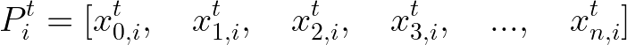
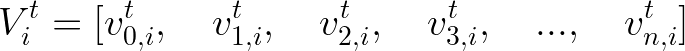
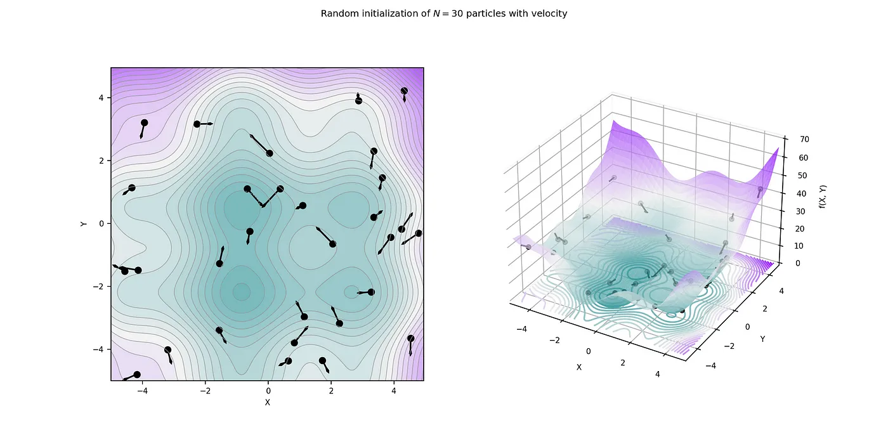
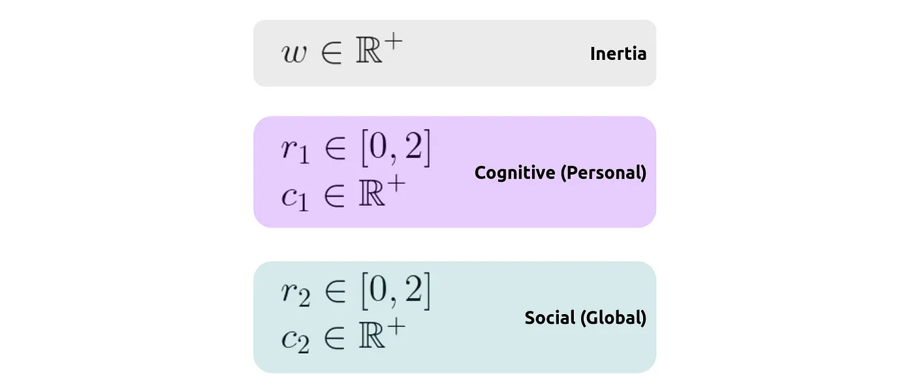
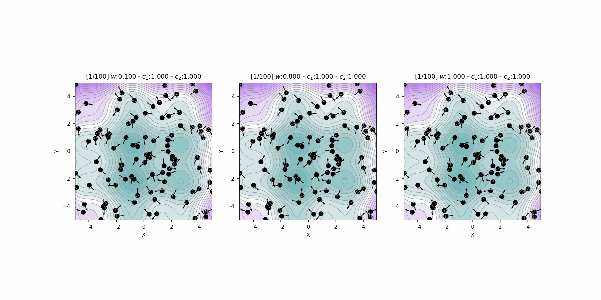

Jan van der Greef/ Buiten-beeld/Minden Pictures/Corbis
The aim of this post is to focus on optimizing a specific mathematical function. This function is well-defined, involving two variables (x and y), and it's smooth enough to allow differentiation. However, it's important to remember that sometimes functions can be more complex, like non-differentiable step functions or functions determined by a neural network's weights where finding the absolute minimum isn't straightforward. For teaching purposes, we're going to use a particular function:
This function is chosen because it enables both two-dimensional (2D) and three-dimensional (3D) visual representations. The main goal here is to find the lowest possible value of this function, known as its global minimum, by varying the values of x and y.

PSO draws its inspiration from the social behaviors observed in birds and fish. Imagine a group of birds searching for food in a vast valley, where food is available at only one spot. While none of the birds know the exact location of the food, they each have an inkling of their distance from it. In PSO, this scenario translates to a group of particles (representing potential solutions) searching for a global minimum in a designated space. Like the birds, these particles do not know the exact location of the global minimum, but they have fitness values assigned by a fitness function, guiding them towards optimization.
The process begins with the random initialization of these particles' positions within the search space.

To find the optimal solution, particles must move - akin to the birds flying through the valley in search of food.

Each particle moves with a certain velocity, allowing it to update its position over iterations to find the global minimum. The velocity of each particle, significant in their search, is defined in each direction. Initially, the velocity vector, like the particle's position, is randomized. This randomness is a key aspect of PSO, categorizing it as a stochastic algorithm.

Let’s get back to the birds, as birds fly through the valley, they maintain their speed (inertia) but adjust their direction based on personal intuition (cognitive) and the influence of the group (social). This mirrors the process in PSO, where each iteration involves particles stochastically accelerating towards both their own best known position (personal best) and the best known position of the group (global best).

Concretely, the velocity update of each particle at every iteration is influenced by two key factors:
This mechanism ensures that each particle 'remembers' and is guided by both its own most successful exploration and the collective wisdom of the swarm. This dual influence is central to the dynamics and success of PSO in finding optimal solutions.

Let’s talk about optimisation now. In the context of Particle Swarm Optimization (PSO), several key factors - inertia, cognitive, and social coefficients - significantly influence the system's performance by balancing exploration and exploitation.
The inertia, cognitive, and social coefficients control how much the particles explore and exploit. Exploration refers to the particles' ability to search the entire space for solutions, while exploitation is their ability to hone in on the best solutions found so far.
While the exact balance between these two is not strictly defined and may not necessarily lead to optimal efficiency, it's a useful concept for understanding PSO. In our analogy, birds might wake up feeling more or less inclined to follow their intuition or the group, depending on the day. While in PSO terms, at each iteration, particles' accelerations are randomly weighted, influenced by both cognitive (personal best) and social (global best) factors, represented by stochastic weights r1 and r2. Furthermore, the hyperparameter w (inertia weight) plays a crucial role. It determines how much the swarm is inclined to change direction, akin to different bird species having varying tendencies to change direction over time.

This weight affects the balance between exploration and exploitation: a lower w value leads to stronger convergence (exploitation), while a higher w value encourages exploration. However, it's advisable to keep w below 1 to prevent divergence.

The impact of w is complemented by the coefficients c1 and c2, which are acceleration coefficients. c1 influences how much the swarm is guided by the best personal solutions found over iterations, while c2 governs the influence of the best global solution.
These coefficients are key in determining the swarm's behavior:
In
summary, the coefficients c1
and c2
are complementary and their combination influences both the exploration and exploitation capabilities of the
swarm, crucial for effectively navigating the search space in PSO.
The concept of auto hyperparameters takes the optimization process a step further. The idea is to dynamically adjust the key coefficients during the optimization process, allowing the swarm to adapt its behavior over time for better results.
This approach is like having a group of birds that initially explores the valley widely, taking advantage of their numbers. Then, as they learn more about the best locations, they focus their search more narrowly on these areas, effectively exploiting their knowledge. Translating this, it means starting with higher values for the inertia weight w and cognitive coefficient c1, and a lower value for the social coefficient c2. This setup encourages broad exploration of the search space. Over time, these values are adjusted: c1 and w decrease, while c2 increases, shifting the focus to exploiting the best solutions discovered.
According to research, optimal static parameters are often w=0.72984 and c1 + c2 > 4, specifically c1 = c2 = 2.05.
This is complemented by a strategy of linearly decaying the parameter w. Building on these principles, a proposed method for dynamically adjusting the coefficients involves the following:
Looking good !)
Ultimately, this sounds like a lot of information, but the Particle Swarm Optimization is a very simple algorithm and is even simpler to transcribe into python code.
import sys
import numpy as np
class PSO:
def __init__(self, particles, velocities, fitness_function,
w=0.8, c_1=1, c_2=1, max_iter=100, auto_coef=True):
self.particles = particles
self.velocities = velocities
self.fitness_function = fitness_function
self.N = len(self.particles)
self.w = w
self.c_1 = c_1
self.c_2 = c_2
self.auto_coef = auto_coef
self.max_iter = max_iter
self.p_bests = self.particles
self.p_bests_values = self.fitness_function(self.particles)
self.g_best = self.p_bests[0]
self.g_best_value = self.p_bests_values[0]
self.update_bests()
self.iter = 0
self.is_running = True
self.update_coef()
def __str__(self):
return f'[{self.iter}/{self.max_iter}] $w$:{self.w:.3f} - $c_1$:{self.c_1:.3f} - $c_2$:{self.c_2:.3f}'
def next(self):
if self.iter > 0:
self.move_particles()
self.update_bests()
self.update_coef()
self.iter += 1
self.is_running = self.is_running and self.iter < self.max_iter
return self.is_running
def update_coef(self):
if self.auto_coef:
t = self.iter
n = self.max_iter
self.w = (0.4/n**2) * (t - n) ** 2 + 0.4
self.c_1 = -3 * t / n + 3.5
self.c_2 = 3 * t / n + 0.5
def move_particles(self):
# add inertia
new_velocities = self.w * self.velocities
# add cognitive component
r_1 = np.random.random(self.N)
r_1 = np.tile(r_1[:, None], (1, 2))
new_velocities += self.c_1 * r_1 * (self.p_bests - self.particles)
# add social component
r_2 = np.random.random(self.N)
r_2 = np.tile(r_2[:, None], (1, 2))
g_best = np.tile(self.g_best[None], (self.N, 1))
new_velocities += self.c_2 * r_2 * (g_best - self.particles)
self.is_running = np.sum(self.velocities - new_velocities) != 0
# update positions and velocities
self.velocities = new_velocities
self.particles = self.particles + new_velocities
def update_bests(self):
fits = self.fitness_function(self.particles)
for i in range(len(self.particles)):
# update best personal value (cognitive)
if fits[i] < self.p_bests_values[i]:
self.p_bests_values[i] = fits[i]
self.p_bests[i] = self.particles[i]
# update best global value (social)
if fits[i] < self.g_best_value:
self.g_best_value = fits[i]
self.g_best = self.particles[i]
Perhaps you will have noticed the only conditions to stop my iterations are:
These stop evaluation functions are not necessarily the bests. These stopping conditions depend heavily on the size of the swarm.
Sources :
http://particleswarm.info/index.html
http://www.swarmintelligence.org/tutorials.php
https://gist.github.com/AxelThevenot/22b33d8b681a340976856c1b0cb085e4#file-pso-py
https://towardsdatascience.com/particle-swarm-optimization-visually-explained-46289eeb2e14